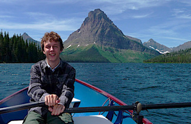
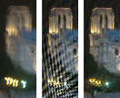
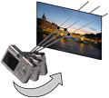
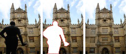

About Me
I now work at Omnivor
PhD student from 2008 — 2012
Département d'Informatique
École Normale Supérieure
PhD Thesis
Removing Camera Shake Blur and Unwanted Occluders from Photographs
Defended March 15th, 2012 at ENS Cachan | PDF
Research
-

Deblurring Shaken and Partially Saturated Images
Oliver Whyte, Josef Sivic and Andrew Zisserman
-

Non-uniform Deblurring for Shaken Images
Oliver Whyte, Josef Sivic, Andrew Zisserman and Jean Ponce
-

Get Out of my Picture!
Internet-based InpaintingOliver Whyte, Josef Sivic and Andrew Zisserman